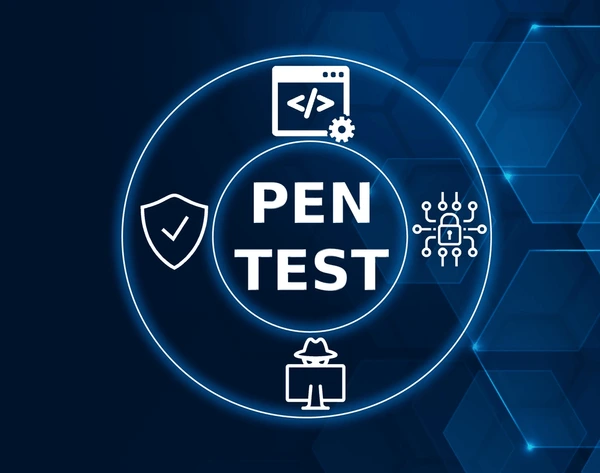

Tests d’intrusion (pentests):
Simulation d’attaques contrôlées pour identifier les vulnérabilités.

Ethical Hacking
Le hacking n’est pas qu’un acte de piratage, c’est aussi une quête de connaissance et de sécurité.
Le hacking éthique consiste à utiliser les mêmes techniques que les pirates (hackers) mais légalement et avec autorisation, pour aider une organisation à trouver et corriger ses faiblesses avant que des personnes malveillantes ne les exploitent. L’objectif : améliorer la sécurité, pas la contourner pour nuire.
Simulation d’attaques contrôlées pour identifier les vulnérabilités.
Scanner et classer les failles (sécurité des serveurs, applications, réseaux).
Red = attaque simulée (adversaire), Blue = défense et réponse aux incidents.
Un test d’intrusion se déroule en plusieurs étapes : cadrage, reconnaissance, analyse, exploitation, et rapport final. Il vise à identifier les failles d’un système en simulant des attaques contrôlées et autorisées. Chaque phase permet de mesurer le niveau de risque et l’impact potentiel d’une faille. Le rapport final est essentiel, car il présente les vulnérabilités découvertes et les solutions à mettre en place.